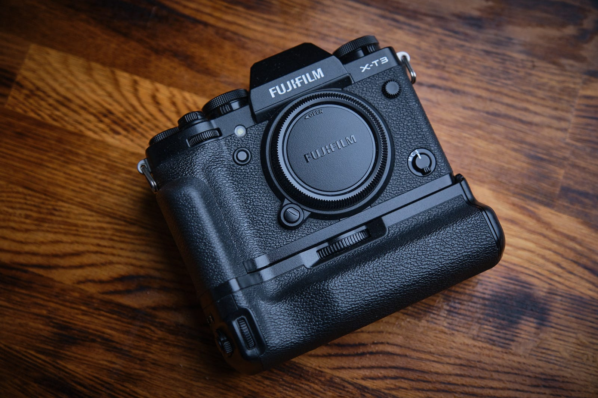
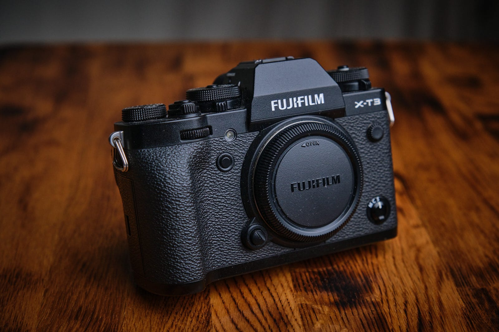
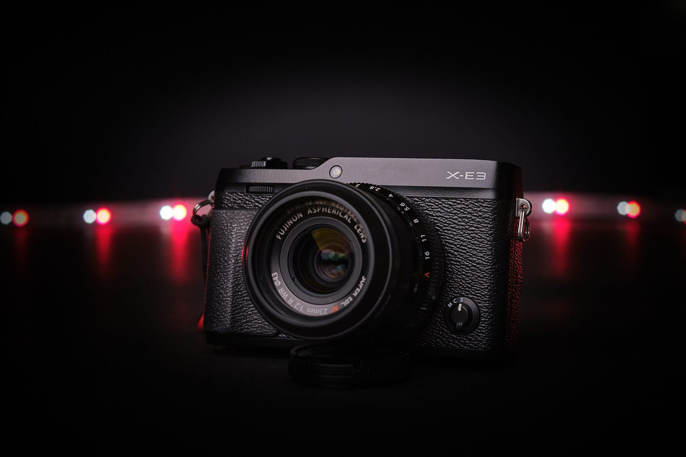
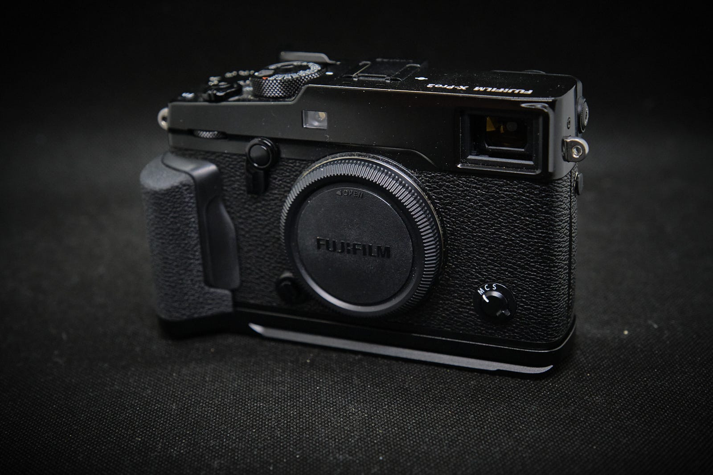
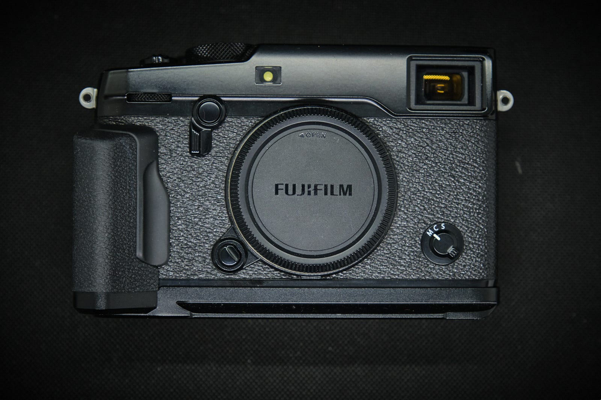
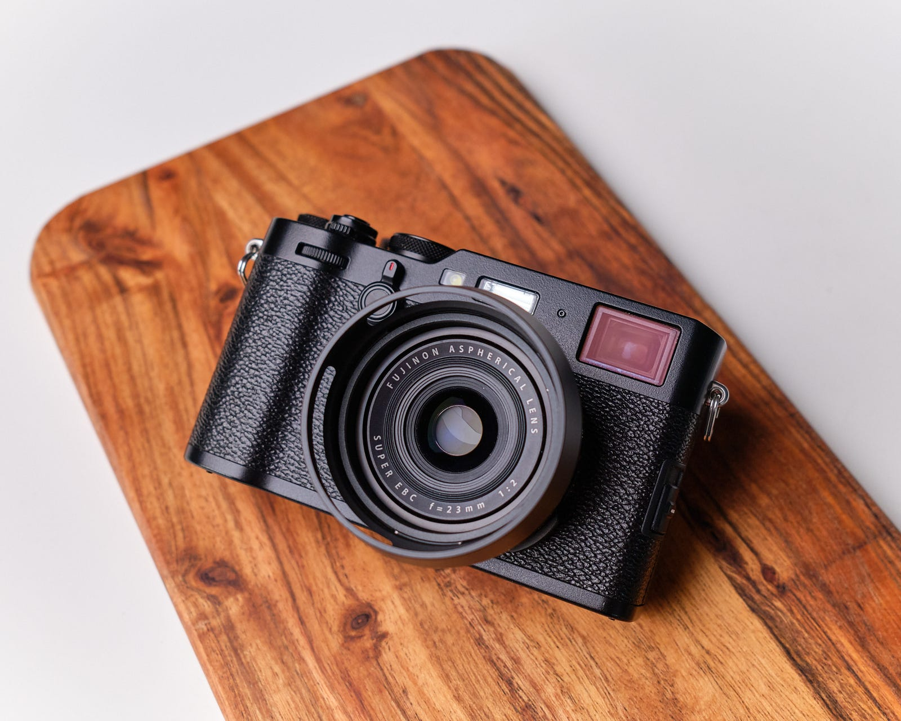
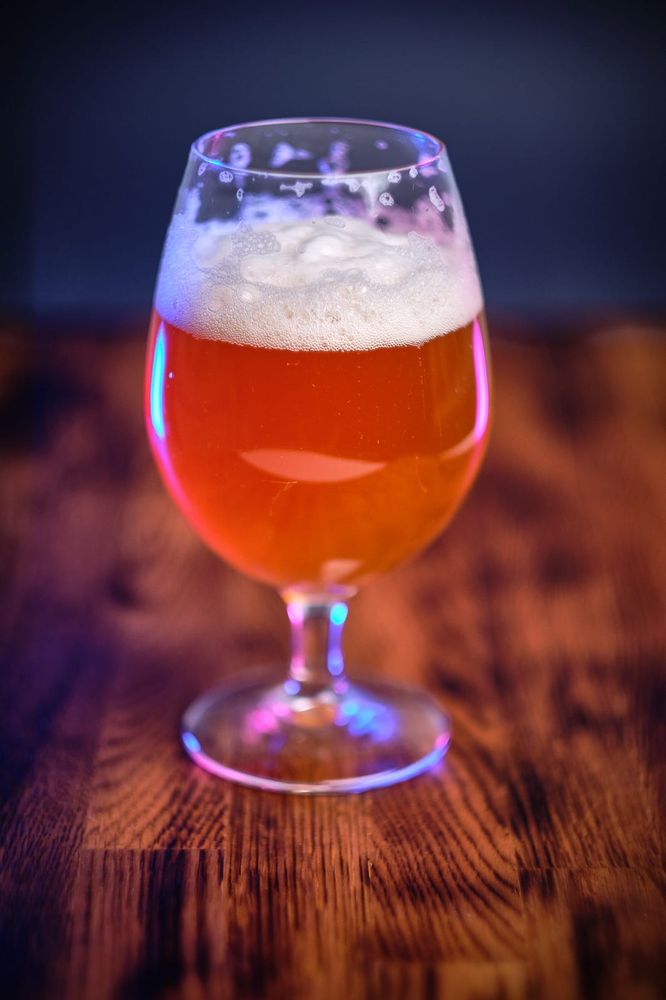

My interest in photography has been almost gone for over a year, with just a few exceptions, like our trip to Greece last summer. All my creative outlets are heavily influenced by my general health and energy levels, and let’s say it hasn’t been that great lately. I decided to take another go at it and bought a new camera; the glorious Fujifilm XT-5. One thing that inspires me, and this happens each time I sell photography equipment is the process of taking product shots of the stuff I’m selling. This time, it was the XT-3 leaving the building.

Previously, I’ve done the same thing for a few other cameras.




My main source of inspiration for these shots is the danish photographer Jonas Rask. His photos are just fantastic. Hopefully, now with a brand new camera (never bought a camera directly from a retailer before, only second-hand gear so far), I can find inspiration to get into photography again. I don’t like winter, snow, or cold, so going outside is not my first choice, but perhaps more product shots like these, and some portrait work, can spark that flame once again. Perhaps more photos of beer? Love beer.
